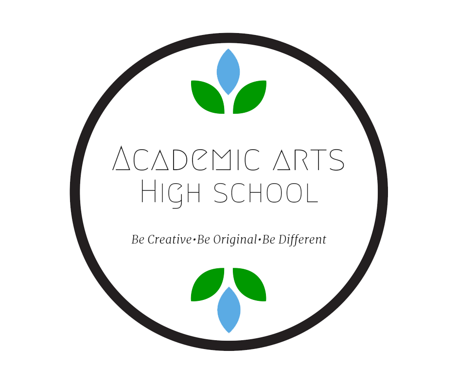
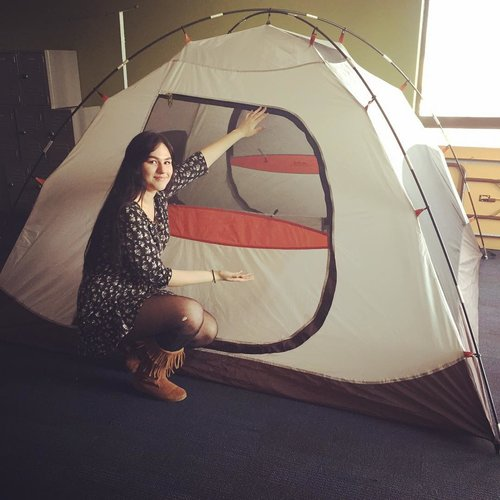
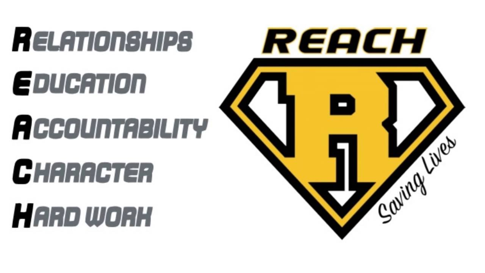

Schools use testing to assess students' academic success. This method is efficient and has been used in schools for over 100 years. However, testing is simply not a skill that is needed in a 21st-century workforce. The next generation of citizens need informed, thoughtful worldviews that recognize the complexity of the challenges that the future holds. They need to be able to take their informed perspectives and DO things with their skills. Though it is useful in some circumstances, curriculum that relies on traditional testing does not foster these real-world skills as well as it could.
AAHS is a project-based school. Though some testing is inevitable, we do not use testing in our core curriculum. We model our learning program after a workplace. Similar to an office environment, students work in teams made up of their peers and teachers. They work on projects with defined specifications and deadlines . Their work is focused. They work on only 3 projects throughout the day rather than 7 or 8 different classes.
They work on these projects for longer amounts of time in a day and projects last for about a month. Students demonstrate mastery of a topic by applying what they have learned to produce a final product that meets state standards for the classes that they are taking and credits that they are earning. Finally, and most importantly, students present their projects to their fellow students and community members at exhibition days.
Quarter Themes

What's in a Theme?
Another important part of our learning program is our quarter themes. Each quarter we focus on different themes. Students learn about different aspects of these themes in all of their classes and field trips. Themes are intentionally broad and are chosen based their potential to address multiple levels of environmental citizenship and to be engaging...for staff and students alike. The staff at AAHS are excited about the things that they are learning along with the students. It is an amazing time to live and there is always more to learn. Themes help us dive deep into engaging topics and understand them from multiple perspectives.
Experiences

Every other Friday from 10am-2pm, students participate in experiences that align with quarter themes. These experiences are generally off-site and include things like service learning, tours, jobsite demonstrations, and other fun ways to learn about the world. You can find dates for experience Fridays on the academic calendar.
Credits
AAHS is a project-based school. Like most schools, we have core classes like science, math, social studies, and language arts. The difference is that students do not earn credit for classes by passing tests. Instead, students show mastery of standards by completing and presenting projects. There are two types of projects at AAHS: Class Projects and PBL Projects. Find out more about the differences below:
Class Projects:
Teacher-designed projects that are integrated into the specific class and aligned with the quarter theme. These projects meet standards for required credits.
PBL Projects:
Student Designed projects that students work on in designated "Project-Based-Learning" (PBL) classes. These projects typically meet standards for elective credits.
Grading
Showing Up Matters
Getting the correct answer is good. But showing up everyday, working hard with a team on something that we don't already know how to do, failing, learning from our failure, and persevering until we accomplish what we set out to do is even better. In fact, it's awesome!
In the modern world of immediate feedback and constant connectivity it can be difficult to see failures as the learning opportunities that they are. At AAHS we are not concerned with getting the correct answer because in the real world no one knows the correct answer before they start. We have to figure it out as we go.
That is why we consider more than the final product when we grade students on their projects. Just like in a workplace students earn credit for showing up, for meeting deadlines, for improving on their work, and for completing the job. To the right, you can find more details about how classes and projects are graded in our four-week blocks.
Reach

The REACH program is a curriculum developed by Chad Harlander from Hutchinson High School. The program is designed to help students make connections with staff and other students in order to build a support network that the can depend on to help them succeed. We have adapted the REACH program for our unique learning community.